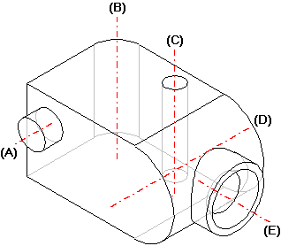

cylindrical face
A portion of a part feature that has a cylinder or partial cylinder shape, and therefore a centerline reference axis. Cylindrical faces result from the construction of revolved features, holes, rounds. They also result from the construction of extruded protrusions and cutouts, when the extruded profile includes an arc.

|
(A) |
Protrusion |
|
(B) |
Round |
|
(C) |
Hole |
|
(D) |
Projected Arc |
|
(E) |
Revolved Protrusion |